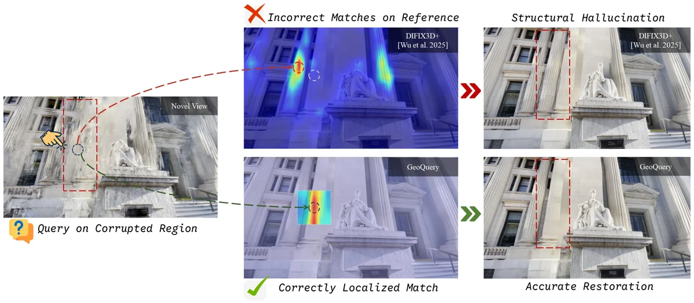

PH.D. STUDENT · UESTC
Xiao Cao曹啸
3D vision × Generative worlds
I am a Ph.D. student at the School of Computer Science and Engineering, University of Electronic Science and Technology of China (UESTC), advised by Prof. Wen Li ↗.
Previously, I received my B.Eng. from the School of Computing and Artificial Intelligence at Southwest Jiaotong University (SWJTU). During my undergraduate studies, I was fortunate to work with Prof. Xiaolin Wu ↗, from whom I received valuable research training.
My research focuses on 3D reconstruction and generative models, especially geometry-aware diffusion, feed-forward neural rendering, and scalable 3D representations.
01 / RESEARCH OUTPUT
Selected publications.
Highlighted: Xiao Cao and first authors. * Corresponding author.
02 / RESEARCH INTERESTS
Spatial intelligence.
3D Reconstruction
Sparse-view and feed-forward methods that turn limited observations into rich 3D representations.
Generative Models
Geometry-aware diffusion and controllable generation for imagining beyond observed views.
Neural Rendering
Efficient novel-view synthesis and neural scene representations for real-world capture.
World Models
Scalable 3D physical understanding and simulation toward spatial intelligence.
03 / LATEST
News & updates.
Our paper GeoQuery ↗ has been accepted to SIGGRAPH 2026.
Our paper has been accepted to CVPR 2026. Congratulations to Yuze Li and all collaborators!
I graduated from SWJTU and started my Ph.D. at UESTC.
Honored to receive the Outstanding Graduate Award of Sichuan Province.